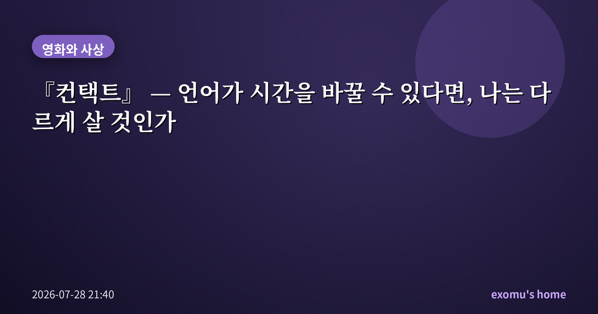
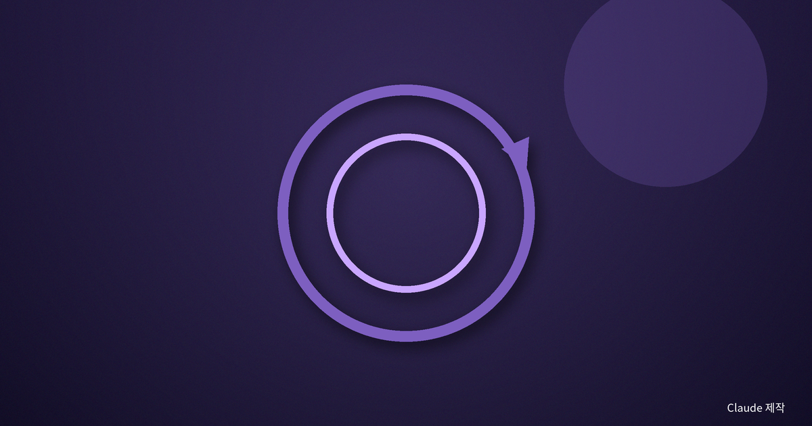
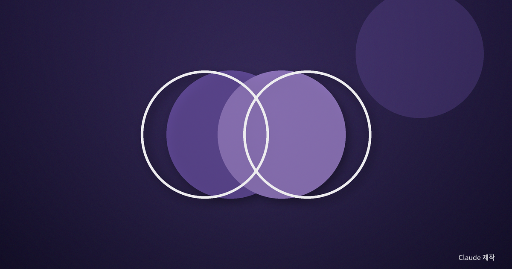
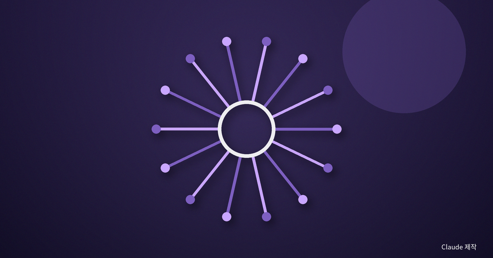
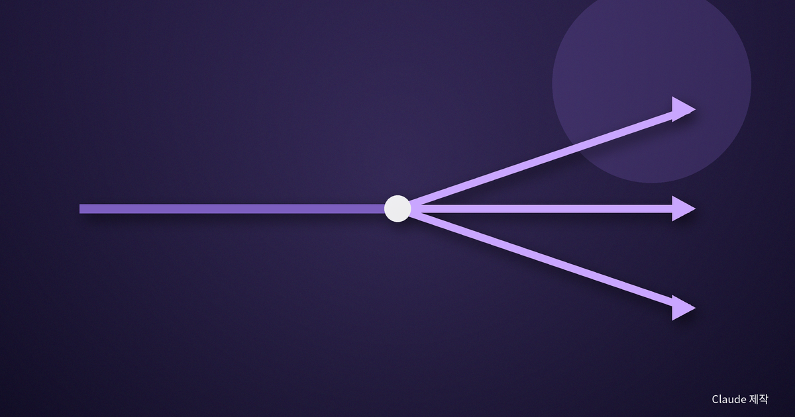

『컨택트』 — 언어가 시간을 바꿀 수 있다면, 나는 다르게 살 것인가

나는 외국어를 처음 배우던 시절, 어떤 문장은 뜻을 옮기는 순간 원래의 결이 흩어진다는 느낌을 자주 받았다. 한 언어에는 있는 시제가 다른 언어에는 없고, 한 단어에 담긴 정서가 번역되면 납작해졌다. 드니 빌뇌브의 『컨택트』를 다시 보며, 나는 그 오래된 감각이 사실은 아주 큰 질문의 입구였다는 걸 깨달았다.
어떤 문장은 시간을 접는다
영화 속 외계 생명체의 문자는 시작도 끝도 없는 원형이다. 왼쪽에서 오른쪽으로, 원인에서 결과로 흐르는 우리의 문장과 달리, 그들의 언어는 전체가 한 번에 놓인다. 주인공은 그 언어를 배우면서 사고의 형태가 바뀌고, 시간을 선형이 아니라 하나의 풍경처럼 경험하기 시작한다.
나는 이 설정이 단순한 SF 장치가 아니라고 생각한다. 그것은 '시간이란 우리가 겪는 것인가, 아니면 우리가 그렇게 배열하도록 배운 것인가'라는 물음을 건드린다. 우리는 아침·점심·저녁을, 어제·오늘·내일을 너무 당연하게 줄 세운다. 그러나 그 줄 세우기 자체가 하나의 습관이라면, 다른 문법을 가진 존재에게 시간은 전혀 다른 모양일 수 있다.

언어가 사고의 국경이라면
20세기 언어학에는, 우리가 쓰는 언어의 구조가 우리가 세계를 지각하는 방식까지 어느 정도 빚는다는 가설이 있었다. 강한 형태로는 논쟁적이지만, 약한 형태—언어가 주의와 습관을 미묘하게 기울인다—는 여러 실험에서 지지받았다. 색을 가리키는 단어가 더 세분된 언어의 사용자가 그 경계의 색을 더 빠르게 구분한다는 식이다.
영화는 이 아이디어를 극단까지 밀어붙인다. 만약 시간을 비선형으로 담는 언어를 완전히 체득한다면, 나는 미래를 '예언'하는 것이 아니라 '기억'하듯 알게 될 것이다. 그러나 여기서 진짜 무거운 질문이 시작된다. 결말을 이미 알면서도, 나는 그 길을 걸을 것인가.
나는 언어를 배울 때마다 조금씩 다른 사람이 되는 경험을 했다. 어떤 언어로 말할 때 나는 더 조심스럽고, 어떤 언어로는 더 대담해진다. 단어의 목록만 바뀌는 게 아니라 세상을 나누는 결이 바뀌는 것이다. 영화의 주인공이 낯선 문자를 익히며 시간 감각까지 바뀌는 장면은, 그 일상적 경험을 거대한 스케일로 확대한 은유처럼 읽혔다.

결말을 알면서도 시작하는 일
어떤 철학자는 시간을 시계의 눈금처럼 잘게 쪼갠 점들의 나열이 아니라, 흘러가며 서로 스며드는 지속으로 보았다. 과거는 지나가 사라지는 게 아니라 현재 안으로 녹아들고, 미래는 그 흐름이 뻗어 나가는 방향이라는 것이다. 이런 시선에서 보면, '이미 정해진 미래'와 '내가 선택하는 삶'은 반드시 모순이 아니다.
주인공은 다가올 상실을 알면서도 사랑을 선택한다. 그 선택은 결과를 바꾸지 못한다. 그러나 나는 그 장면에서 자유의 다른 정의를 본다. 자유란 결과를 마음대로 고치는 힘이 아니라, 이미 주어진 삶을 그럼에도 '내 것으로' 끌어안는 태도일지 모른다. 정해진 결말을 원망하며 사는 삶과, 같은 결말을 껴안으며 사는 삶은 시간표는 같아도 전혀 다른 삶이다.
이 지점에서 영화는 운명론으로 미끄러지지 않는다. 미래를 안다고 해서 주인공이 수동적으로 끌려가는 게 아니라, 알면서도 매 순간 능동적으로 '예'라고 답하기 때문이다. 앎은 선택을 지우지 않는다. 오히려 선택을 더 무겁고 진실하게 만든다.

나의 하루로 돌아와서
나는 미래를 미리 볼 수 없다. 하지만 우리도 어렴풋이는 안다. 사랑하는 것은 언젠가 잃는다는 것을, 시작한 일은 끝을 향한다는 것을. 그걸 알면서도 오늘 아침 다시 누군가에게 안부를 묻고, 끝날 걸 아는 일에 마음을 쏟는다.
『컨택트』가 내게 남긴 것은 외계인도 시간여행도 아니었다. 결말을 안다고 해서 과정이 무의미해지지 않는다는 감각, 오히려 유한하기 때문에 지금 이 문장이 무거워진다는 감각이었다. 언어가 시간을 바꿀 수 있다면, 나는 아마 지금과 같은 선택을 다시 할 것이다.
